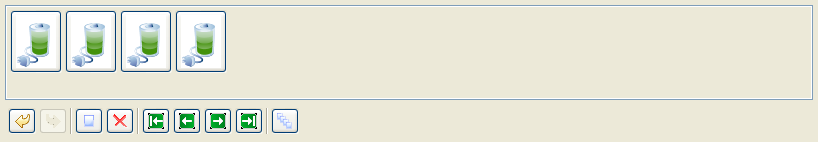

Edit Frame Animations
Note:
This step applies to Note
icons (animated) and the Browser connecting icon.
- In the Icons view,
right-click an animated icon and select
Edit/Animate selected elements.
- Animation editor opens.
- Right-click a frame and
select to edit the image with an external
bitmap or a vector editor.
- Edit the frame.
- Save the frame and exit the
editor.

Figure:
Edit Frame Animations
If
you want to add or delete frame:
- To delete a frame from the
animation, click a frame and click the
red cross.
- To add an empty frame to the
animation, click the white paper
sheet.
- To preview the animation,
click the green play button.
- The animation has changed to
reflect the changes you made.
- Exit the Animation editor.
When prompted, save the animation.
- Changes to the animation are
saved.